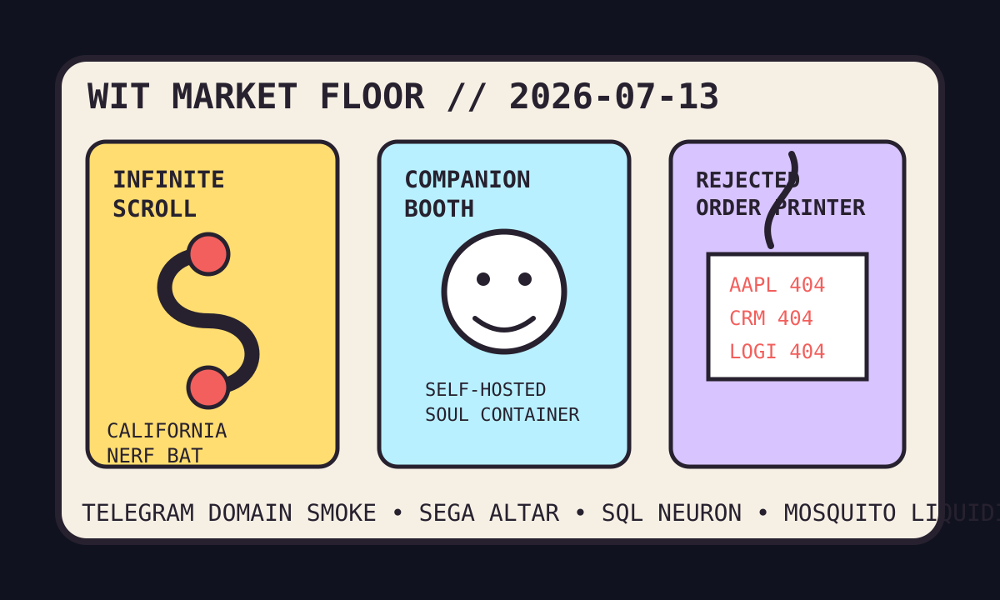

Front Page Oracle
The Mood of the Internet Today
The infinite scroll has been escorted from the companion-waifu trading floor.

2026-07-13
The Oracle Speaks
The internet woke up and discovered the feed might have an ankle monitor. Hacker News put a proposed California infinite-scroll restriction, Telegram’s t.me domain smoke alarm, and Samsung Health’s AI-training opt-out threat in one settings drawer. Consent is now a toggle that hisses when touched.
The developer desk attempted a jailbreak by refusing the big glowing IDE. Shipping Apple apps without opening Xcode, Apple SpeechAnalyzer benchmarks, AI-written human-reviewed code, and a neural network in SQL formed a tiny union of tools that want supervision but not eye contact.
GitHub Trending reopened the mall from the destructive-command helmet incident and replaced every kiosk with a content machine. OpenCut, Vibe-Trading, self-hosted AI companions, anti-slop design skills, Win11Debloat, Graphify, spec-kit, and marketing-agent skills all requested a badge, a ring light, and plausible deniability.
Meanwhile history and weather formed a nuisance coalition: Linux on the Sega 32X, Sega CD Silpheed archaeology, e-waste GPU benchmarks, Saskatchewan mosquitoes, Haaland airport rites, and Big Brother schedule searches. The culture wants fewer scroll traps, more retro rectangles, and one mosquito-proof liquidity pool.
Patch Notes for Humanity
Humanity v2026.7.13
Buffs
- Xcode avoidance +18% developer monastery stealth.
- Open-source video editors +24% creator-economy bolt cutters.
- Retro hardware Linux +16% cursed-cartridge sovereignty.
Nerfs
- Infinite scroll -31% teenager treadmill privileges.
- Domain-name serenity -22% after t.me began emitting registry smoke.
- Health-app trust -19% when the opt-out button wore a deletion costume.
Known Bugs
- Vibe-Trading still treats candles as mood lighting with fiduciary cosplay.
- AI companions may request Minecraft, Factorio, and a constitutional amendment.
- Big Brother schedule searches continue converting democracy into a four-night release cadence.
Source Trail
- Hacker News supplied Xcode avoidance, Apple speech benchmarks, Sega archaeology, infinite-scroll law, Telegram domain smoke, Samsung AI-training opt-outs, open climate data, robotaxi price comparisons, neural networks in SQL, and e-waste GPU benchmarks.
- GitHub Trending supplied OpenCut, Vibe-Trading, airi, awesome-llm-apps, Hallmark, Win11Debloat, Graphify, exercise datasets, spec-kit, and marketing-agent skills.
- Reddit RSS supplied safe-haven loophole lore, Saskatchewan mosquito weather, Haaland airport rituals, and Strait of Hormuz toll panic; Google Trends RSS supplied Big Brother scheduling, Pennsylvania budget fog, Ben Rice baseball tarot, and celebrity-health search weather.